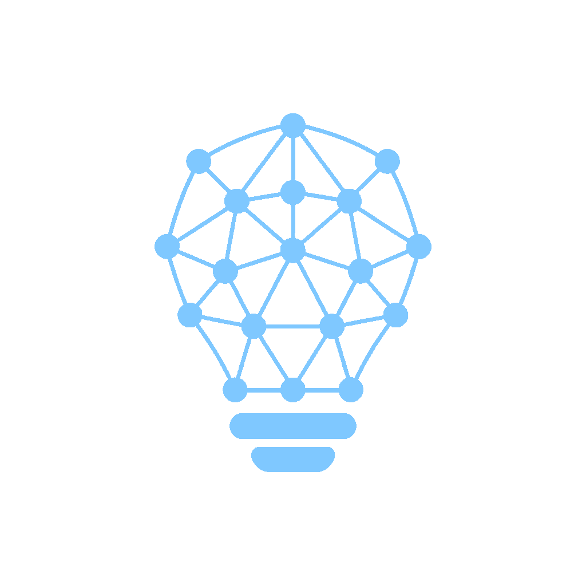

MG v4
· 主标仅用批准 raster ·
olw-mark.png
连线动画 → 定格
Replay
.md
.md
.md
本机磁盘 · 文件即真相
知识住在
你的文件夹
里，不在别人的云里

[[wikilink]]
连成网 · 收成
洞察晶格
Agent
长对话 / 来源
原始上下文、草稿与证据…
DISTILL
Vault · 笔记
Concept
Entity
Summary
Distill
what matters
.
Agent 把对话与来源
蒸馏
进本地知识库
v4 · brand 清理 + 连线动画
已删除
brand 下全部错误 SVG 与
render_mark.py
；只保留你确认正确的 raster。
MG 第二幕
：不再单独做 6 节点网；在灯泡晶格上做连线动画，收束到批准主标
olw-mark.png
。
连线路径仅为动效脚手架；定格帧永远是批准 raster，避免错误矢量冒充品牌。
拟嵌入：首次无 Vault 欢迎台。